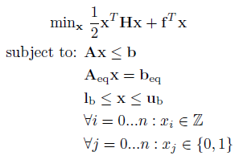
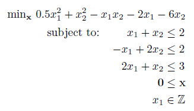
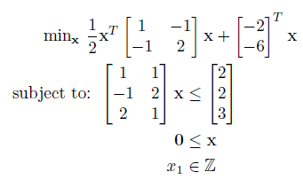
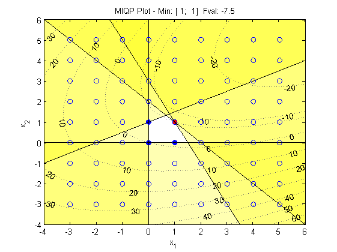

Mixed Integer Quadratic Program (MIQP)
Introduction
A mixed integer quadratic program has the following form:

Where H is a n x n sparse matrix (quadratic and bilinear terms) and f is a n x 1 vector (linear terms) containing the quadratic objective function, which is subject to the following linear constraints:
Linear Inequalities*
A is a m x n
sparse matrix, b is a m x 1 vector
Linear Equalities*
Aeq is a k x n sparse matrix, beq
is a k x 1 vector
Decision Variable Bounds
lb and ub are n x 1 vectors,
where -inf or inf indicate an unbounded lower or upper bound, respectively
Integer Constraints
xi are decision variables
which must be a integer number (...-2, -1, 0, 1, 2...)
Binary Constraints
xj are decision variables which must be a binary number (0,1), where
i ≠ j.
The goal is to minimize the objective function by selecting a value of x that also satisfies all constraints.
*Your problem description will either use Linear Inequalties and Linear Equalities OR Linear Row Constraints. See the constraint information page.
Example Problem

From the above problem description we can write the problem in standard form:

This can be solved using the OPTI Toolbox as follows:
% Objective
H = [1 -1; -1 2];
f = -[2 6]';
% Constraints
A = [1 1; -1 2; 2 1];
b = [2; 2; 3];
lb = [0;0];
int = 'IC';
% Build OPTI Problem
Opt = opti('H',H,'f',f,'ineq',A,b,'lb',lb,'int',int)
% Solve
x = solve(Opt)
And the solution is:
x =
1
1
To better visualize the solution, this can be plotted as follows:
plot(Opt)

Solving as a MINLP
Currently no solver supplied with the OPTI Toolbox can solve a MIQP explicitly. Only commercial solvers such as CPLEX and MOSEK have this functionality. However OPTI will automatically convert this problem to a MINLP and solve it using BONMIN if one of the commercial solvers is not available on your system.
Considerations
Some QP solvers will only solve a convex QP, that is one where the H matrix is positive definite (all eigenvalues > 0). A further constraint is some solvers will also expect a symmetric positive definite H. This can be enforced by a solver by requesting only the lower triangular section of H, and it checks for non zero entries above the diagonal. The reason for this is that a positive definite H ensures the solution is convex, where there is only one minimum. A non-convex problem may have multiple local minima, and thus the solver may not be setup for this type of problem.
See the section Solver Configuration for more details.
Copyright © 2011-2013 Jonathan Currie (I2C2)